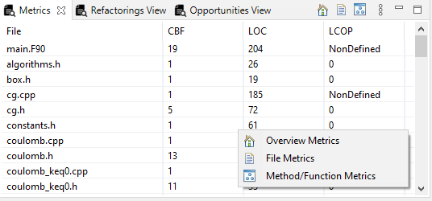

The Metrics view is a table where all the calculated metrics (FanOut, Cohesion, Cyclomatic Complexity, and Lines of Code) are stored. In this view, there are 3 options in order to show the file metrics or the method/function metrics. The user can change the option through right-clicking inside this view or by using the icons in the toolbar, for file and method/function metrics respectively.
The third option is the general metrics of the project. Here are visible the system metrics and the TD of the overall project (Source Code Debt, Design Debt, TD Interest).
In the Refactorings view, there are all the files and methods/functions in need of some kind of refactoring because of a very high metric value. With the threshold of a hight metric value being the upper 10% of metric distribution, considering all analyzed projects. In this view, there are four different options, one for each metric, which can be changed through a right-click inside the view or by the icons on the toolbar.
Moreover, the user can start the TD repayment process from here, in the Cohesion Files option, one can double click a file in order to start the process of finding specific opportunities for refactorings.